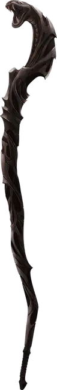

Посох гадюки
Staff of the Adder
Посох, необычный (требуется настройка)

Рекомендованная стоимость 400 зм
Бонусным действием вы можете превратить навершие этого посоха в живую ядовитую змею или вернуть посоху неоживлённую форму.
Когда вы предпринимаете действие Атака, одну из его атак вы можете совершить, используя оживлённое навершие посоха (его досягаемость равна 5 футам). Вы добавляете ваши Бонус владения и модификатор Мудрости к такому броску атаки. При попадании цель получает 1к6 Колющего урона и 3к6 урона Ядом.
Пока навершие находится в оживлённой форме, его можно атаковать: его КЗ равно 15, у него 20 Хитов и Иммунитет к Психическому урону и урону Ядом. Если Хиты навершия опускаются до 0, посох уничтожается. Посох восстанавливает все Хиты, если возвращается в неоживлённую форму до того, как уничтожен.